OpenCodeBar lives in your Mac's menu bar and in your pocket on iPhone and iPad. Watch
what every session is doing, read and reply in the conversation, start new work, inspect the files it
changed, and track usage — all synced through a local hub that keeps history when OpenCode is stopped.
Click the menu bar item for running work, recent sessions, projects, and usage — or pick it all up on your phone.
OpenCodeBar
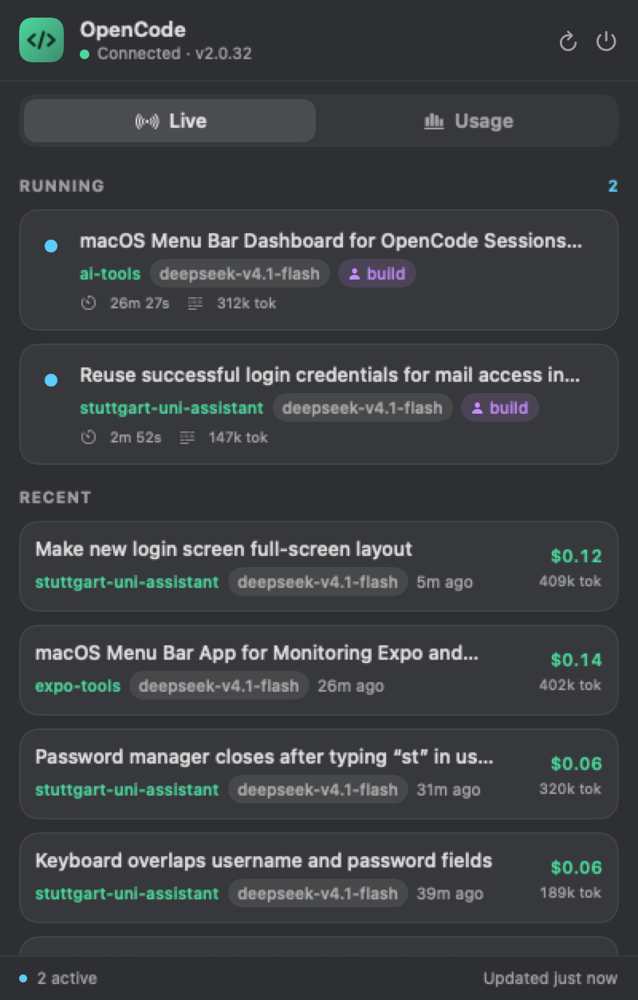
Features
Everything at a glance
Two native apps and one shared hub. The Mac panel and the iPhone/iPad app show the same live activity, conversation, project, and usage data — with the same compact panel design.
Live sessions
Running sessions update in real time over OpenCode's event stream, with new rows sliding in at the top. See the current tool and command, streaming reasoning, todo progress, running subagents, live cost, elapsed time, and tokens — not just a spinner. Recent sessions sit below with project, model, relative time, cost, and tokens, and can be filtered by project and date.
Session detail
Open any session for the full conversation with the newest message first: assistant text, collapsible reasoning, and tool calls with their input and output. It refreshes in place while a session runs, and Load earlier pages back through history at the bottom.
Reply, speak & start sessions
The composer at the bottom of a conversation sends the next prompt; running sessions queue it until the current turn finishes, and the pending queue stays visible above the composer so you can withdraw a prompt before it starts. Tap the microphone to dictate instead of typing, and the transcript stays editable. A New Session sheet starts work in any project with an optional title and first message.
Stats & reliability
A Stats tab per session with prompts, steps, tool-call reliability, per-tool failure counts and median durations, the recent failures with their errors, file impact, and the token mix.
File changes
A Changes tab shows every file a session wrote, with the actual patch, added and removed line counts, and a colour-coded diff. Repeated edits to one file are grouped, and long patches collapse to a preview.
Subagents
A session's child sessions appear in a Subagents tab with their own live activity, outcome, cost, and time. Tap one to drill in; Back returns to the parent, and each level loads its own children.
Projects
Every project OpenCode has run in, running work first. Open one for what's running now, its own steps, cost, tokens, streak and model mix, recent sessions, aggregated file changes, and tool reliability — plus Finder, Terminal, and copy-path actions.
Usage & plan limits
Streak, active days, today's steps, prompts, sessions, cost, and tokens — plus your Go plan's rolling, weekly, and monthly allowances with reset countdowns. Last-known values stay visible when the API is unreachable.
iPhone & iPad
The same Live, Projects, Usage, and Settings areas with a floating tab dock, search, pull-to-refresh, and deep links to a session. Appearance can follow the system or stay dark or light.
Shared hub
A Bun + SQLite hub ingests OpenCode once and serves both apps behind a Bearer token. Sessions, messages, changes, stats, and plan limits stay cached — so the phone, and the Mac when OpenCode is stopped, still have history.
Heatmap & token mix
A GitHub-style activity heatmap of daily agent steps, plus input, output, reasoning, and cache read/write broken out into one stacked bar — so momentum and token spend are easy to read.
Models & tools
Per-model steps and cost, plus tool-call success and failure breakdowns globally and per project — including how much work went to subagents and which tools need attention.
Screenshots
Take a closer look
The Mac panel is a native popover — dark, compact, and built to stay out of the way.
OpenCodeBar
Live. Running sessions stream in over SSE; recent sessions sit right below.
OpenCodeBar
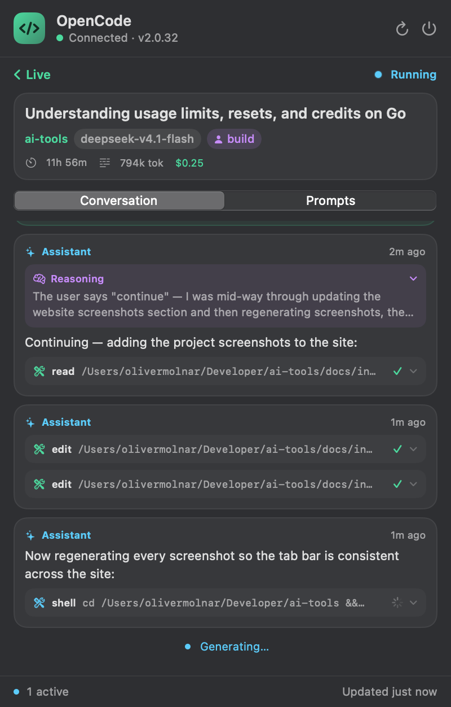
Session. Open any session for its conversation — reasoning, tool calls, and a live view while it runs.
OpenCodeBar
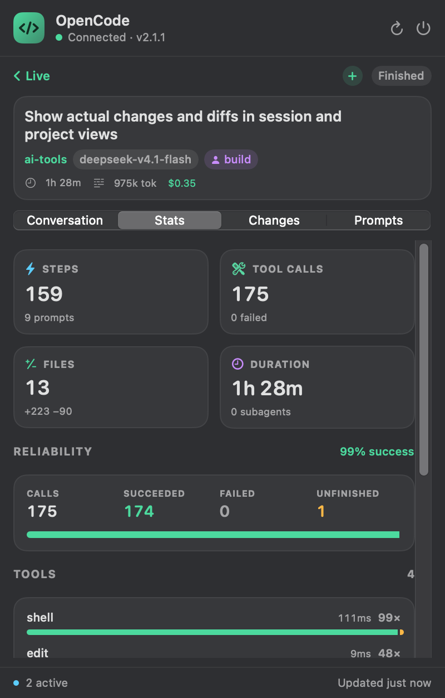
Stats. Prompts, steps, tool reliability, recent failures, file impact, and the token mix for a session.
OpenCodeBar
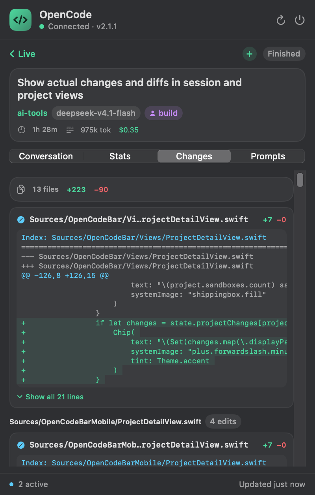
Changes. Every file the session wrote, with its patch, line counts, and a colour-coded diff grouped by file.
OpenCodeBar
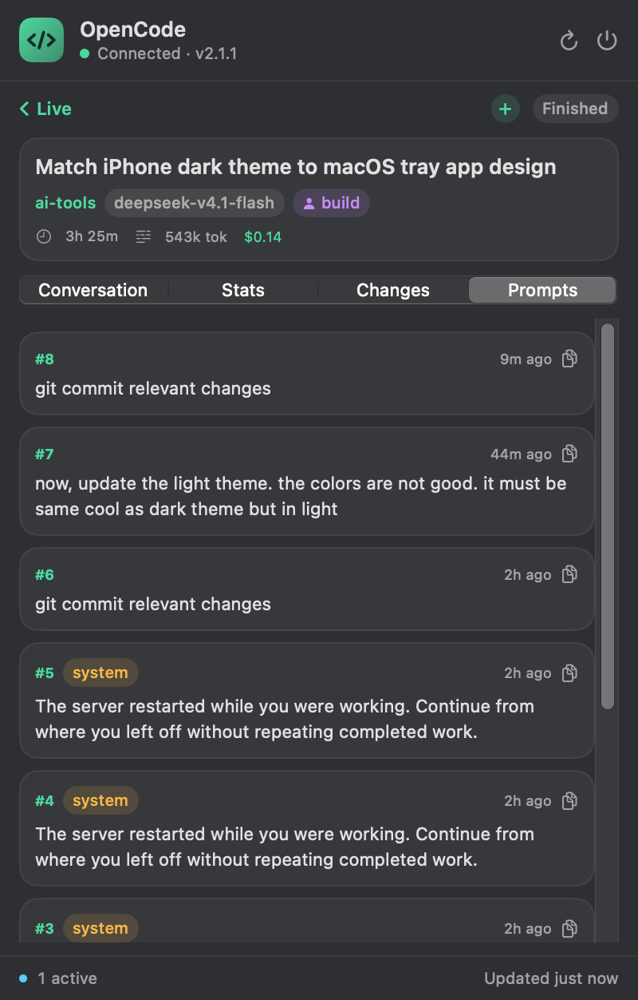
Prompts. A numbered prompts-only list with a copy button on every entry; system and shell entries are labeled.
OpenCodeBar
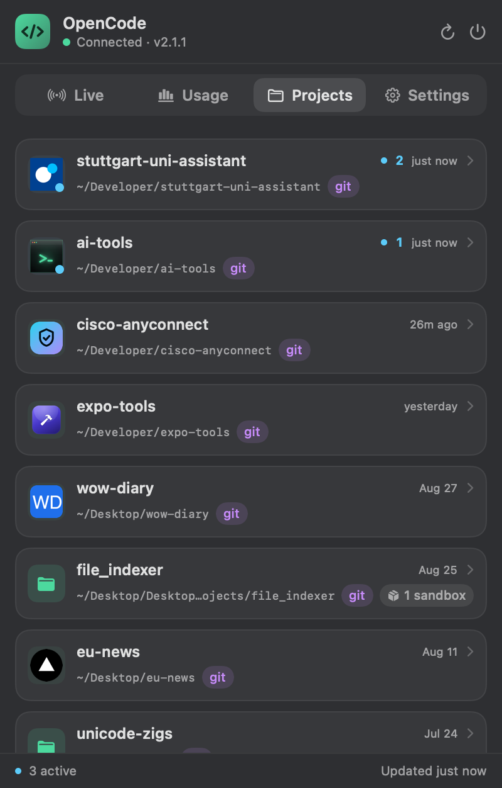
Projects. Every project OpenCode has run in — running work first, then most recently active.
OpenCodeBar
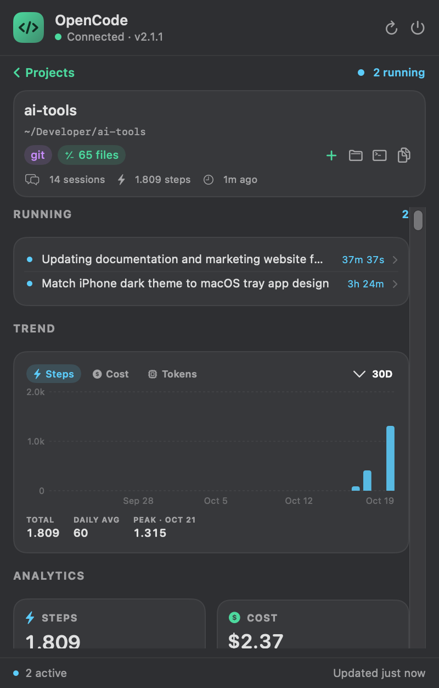
Project detail. Open one for live instances, scoped analytics, project changes, tool reliability, and recent sessions.
OpenCodeBar
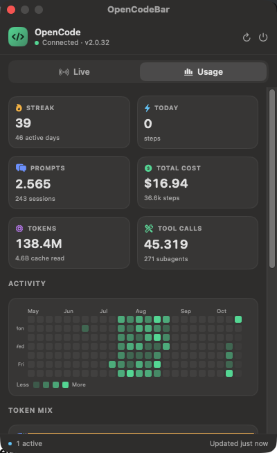
Usage. Go plan limits, streaks, tiles, the activity heatmap, token mix, models, and tool calls.
iPhone & iPad
Same panel, in your pocket
The iOS app follows the Mac's dark design and talks to the same hub. Check the work while you're away from the desk, then reply or start the next session from your phone.
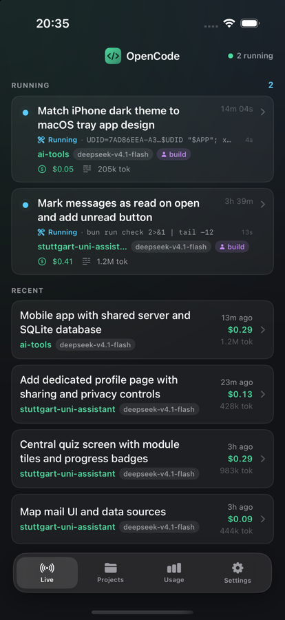
Live. Running work, current tools, live cost and tokens, and recent sessions — with a floating tab dock.
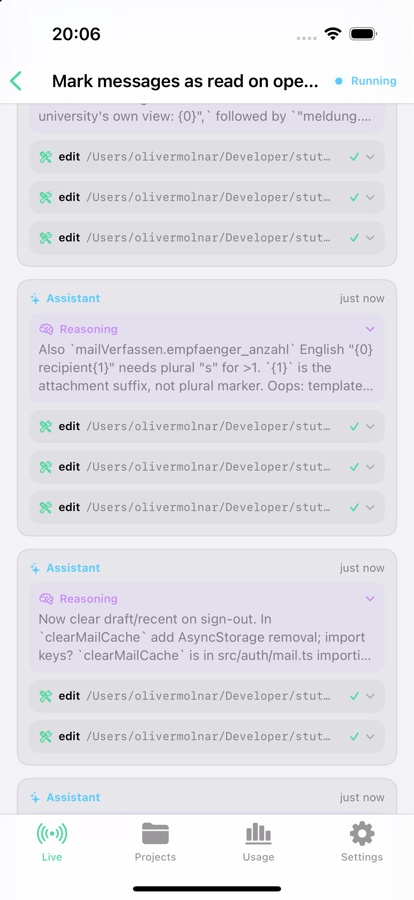
Session. Chat, Stats, Changes, Prompts, and Subagents in one place — newest first, with a composer to reply.
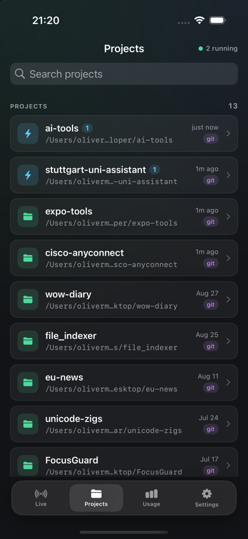
Projects. Search every project, see what's running, then drill into scoped analytics and changes.
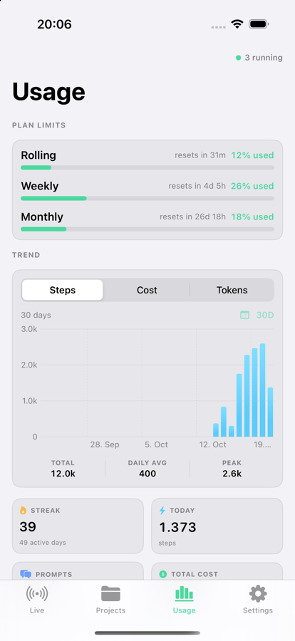
Usage. Go plan limits, trends, and totals stay available from the hub's cache.
Pair in seconds
Scan the QR code from the Mac app, tap the opencodebar://pair link, or paste the hub's URL and token. Credentials stay on the device.
Search & refresh
Filter projects, pull to refresh any screen, and open a session directly from a link. The hub's live stream keeps it current.
Follow the system
Appearance can follow the system or stay dark or light. Settings also shows hub and OpenCode health, cached counts, uptime, and last sync.
Shared hub
One local source of truth
OpenCodeBar Hub is a small Bun + SQLite server. It discovers your local OpenCode service once, caches what it reads, and fans the live event stream out to both apps.
History that survives. Sessions, projects, messages, file changes, tool stats, and Go plan limits live in ~/.local/share/opencodebar/hub.sqlite. The phone — and the Mac when OpenCode is stopped — keep showing the last known state.
Live for both apps. The hub subscribes to OpenCode's SSE stream and forwards every event, so rows update as tools run, reasoning streams, and cost changes.
Local by default. Reads and writes cross loopback to OpenCode; clients authenticate to the hub with a Bearer token. Pairing writes an owner-only config for the Mac and a link for the phone.
No second service to trust. The hub is plain TypeScript in server/, tested with make hub-test, and started with make hub.
Build the hub, then one or both apps. Everything runs locally — no App Store, and the Mac app needs no signing setup.
Clone the repository
Mac app, iOS app, and hub live in one repo. The Mac side is a single Swift package with no runtime dependencies.
Start the hub
make hub installs the Bun dependencies and prints the URL, LAN address, and a pairing link for your phone. Keep it running.
Launch the Mac app
make run in a second terminal builds, ad-hoc signs, and opens dist/OpenCodeBar.app. It connects to the hub automatically.
Pair your iPhone or iPad (optional)
make mobile-run builds and launches the iOS simulator and pairs it when the hub config exists. For a physical device, make mobile-device builds, signs, installs, and pairs over the Mac's LAN address, or over a make hub-tunnel URL when the phone is on cellular. Set DEVICE=… if more than one is connected. You can also scan the pairing QR code from the Mac app's Settings tab.
zsh — build
$ git clone https://github.com/403access/ai-tools.git
$ cd ai-tools
$ make hub # terminal 1: start the hub$ make run # terminal 2: macOS app$ make mobile-run # optional: iOS simulator
macOS 14 Sonoma+
iOS 17+
Bun 1.1+
Xcode + XcodeGen
OpenCode v2 service
Under the hood
How it works
The apps are thin clients over one local hub, which is a thin client over OpenCode's HTTP API.
01
Finds the service
The hub reads the password from service.json and discovers the local port via the OpenCode CLI, lsof, and the server log.
02
Caches the history
It polls sessions, projects, messages, stats, and changes, folds the SSE stream into live activity, and writes everything to SQLite.
03
Serves both apps
A stable, mirrored API sits behind a Bearer token. The Mac auto-discovers the hub; the phone pairs with a URL, token, deep link, or QR code.
04
Updates live
The hub forwards OpenCode events to every connected client and reconnects when the service moves. Prompts and new sessions are forwarded back.